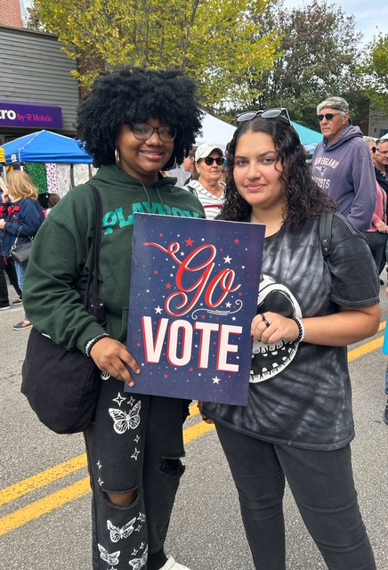
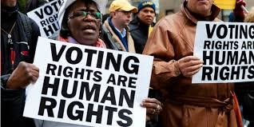
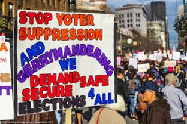

The League of Women Voters of Newport County is a nonpartisan organization working to register voters, host candidate forums, and advocate for good government across six towns in Rhode Island.
Democracy thrives when every eligible citizen can vote and participate in government. The League of Women Voters has been defending voting rights and promoting civic engagement for over 100 years.
In Newport County, we work year-round to ensure that every voice is heard and every vote counts. From registering first-time voters to hosting nonpartisan candidate forums, we empower our community to make informed decisions at the ballot box.

Registering voters at community events throughout Newport County

Advocating for accessible, secure elections for all eligible voters

Building awareness and fighting for fair, safe, and secure elections
Making a difference is easier than you think. Here's how to join us:
Join the League for $75/year (individual) or $100/year (household). Membership includes our newsletter, event invitations, and voting rights in League decisions.
Help register voters, organize events, or observe local government meetings. We offer flexible opportunities that fit your schedule—from 2-5 hours per month.
Subscribe to our monthly newsletter, attend our quarterly meetings, and follow us on Facebook to stay connected with League activities and advocacy efforts.
Join fellow citizens across Newport County working to strengthen democracy and empower voters. Together, we can make a difference.
Join the League Today